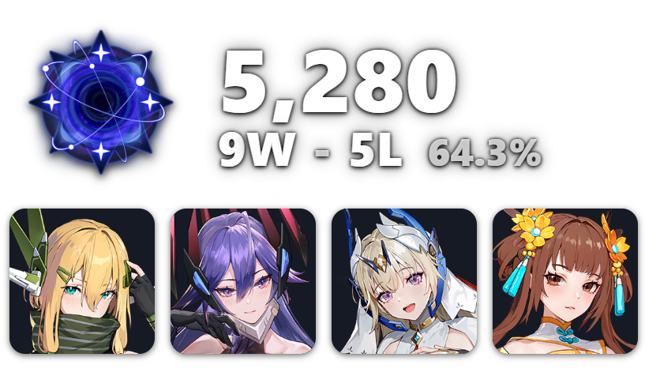
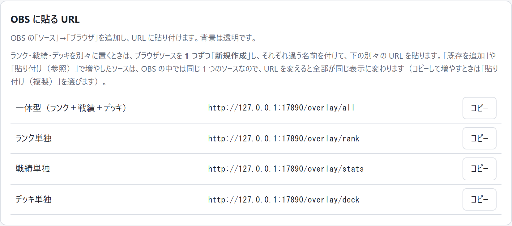
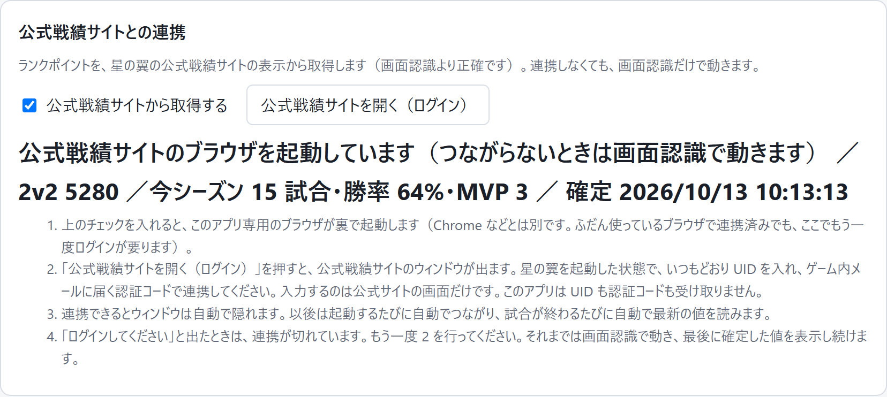
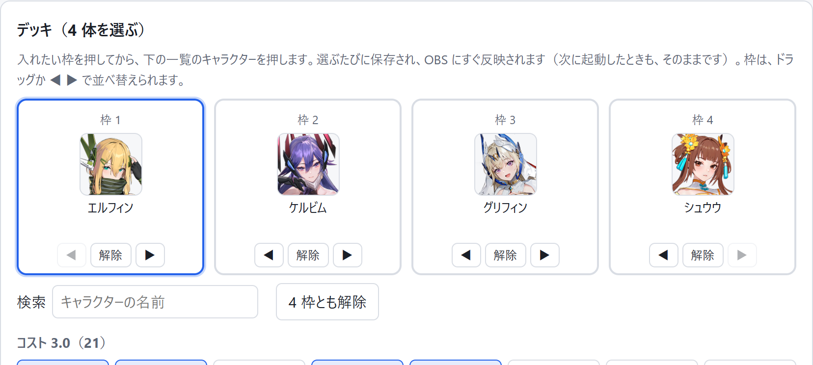

Starward Overlay
星の翼の配信者向け・非公式・無料 ／ 版 0.2.0
星の翼の配信に重ねる、OBS 用のオーバーレイです。ランク・ランクポイント・今日の勝敗と勝率・デッキ 4 体を、配信画面に表示します。上位 100 位に入っているときは、順位入りの勲章で表示します。

表示の例（数字は見本です）。テーマ・フォント・アイコンの形などは、設定画面で変えられます。
ダウンロード
ダウンロードは、まだ始まっていません。
- ファイル
- StarwardOverlay-0.2.0.zip（129,922,532 バイト・約 130MB）
- SHA-256
- 7a13f3c9d8abf6df22917f008e48739fc9e31f564596ce8763f0cb14d4b4512f
- 確認している環境
- Windows 11（開発者の PC）。Windows 10 では確かめていません。
- 必要なもの
- OBS Studio。公式戦績サイトとの連携には、Microsoft Edge WebView2 ランタイム（Windows 11 には最初から入っています）。
上の SHA-256 の ZIP は、Windows Defender と ClamAV で検査し、どちらも検出はありませんでした（2026 年 10 月 13 日）。検出が無いことは、安全の証明ではありません。
入れ方
インストーラーはありません。Python なども要りません。
- ZIP を展開する。ダウンロードした ZIP を右クリック →「すべて展開」を選びます。展開先は、どこでもかまいません。ZIP を開いただけの状態では動きません。
StarwardOverlay.exeをダブルクリックする。画面の右下（タスクトレイ）にアイコンが出て、ブラウザに設定画面が開きます。次からも、同じファイルをダブルクリックします。
同じフォルダのStart Overlay.batは、Windows の設定によっては止められます。StarwardOverlay.exeのほうを使ってください。- URL を、OBS の「ブラウザ」ソースに貼る。設定画面のいちばん上「OBS に貼る URL」の「コピー」を押します（まずは「一体型」）。OBS の「ソース」の「＋」→「ブラウザ」→「新規作成」を選び、URL の欄に貼ります。幅 620・高さ 400 が目安で、背景は透明です。
ランク・戦績・デッキを別々に置くときは、ブラウザソースを 1 つずつ「新規作成」してください。「既存を追加」で増やしたソースは、OBS の中では同じ 1 つのソースなので、URL を変えると全部が同じ表示に変わります。
- 公式戦績サイトと連携する（初回だけ）。星の翼を起動してから、設定画面の「公式戦績サイトを開く（ログイン）」を押します。出てきた公式戦績サイトのウィンドウで、いつもどおり UID を入れ、ゲーム内メールに届く認証コードで連携します。
このアプリ専用のブラウザを使うので、Chrome などで連携済みでも、ここでもう一度連携が要ります。連携しなくても、ゲーム画面の読み取りだけで動きます（ゲームは、ボーダーレスかウィンドウ表示にしてください）。
- デッキ 4 体を選ぶ。デッキは、自動では入りません。設定画面の「デッキ（4 体を選ぶ）」で、入れたい枠を押してから、下の一覧のキャラクターを押します。選ぶたびに保存され、OBS にすぐ反映されます。

終了するときは、タスクトレイのアイコンを右クリックして「終了」を選びます。くわしい説明は、ZIP の中の README.txt にあります。
使う前に読んでください
- 非公式のツールです。星の翼の運営・開発元が作成・提供・保証するものではありません。
- 作者の電子署名は、付いていません。
StarwardOverlay.exeは、python.org が配っている Python の起動用プログラムを、名前だけ変えて置いたものです。プロパティに出る署名「Python Software Foundation」は、Python の起動用プログラムが本物であることを示すだけで、このアプリの内容を確かめた・保証した、という意味ではありません。アプリ本体はappフォルダの中の、中身を読めるプログラムです。 - UID・認証コードを、アプリは受け取りません。入力するのは、公式戦績サイトの画面だけです。アプリは、ログインしたあとの画面に表示された数字だけを、あなたの PC の中で読みます。設定・戦績・ログイン状態は PC の中だけに保存し、外部へは送りません。
- Windows のセキュリティの設定は、切らないでください。スマート アプリ コントロール・ウイルス対策・SmartScreen を切ったり、このアプリを除外に入れたりする必要はありません。止められたときは、無理に動かさず、出た文面を控えてお知らせください。
- 表示に使っている画像について。ランクのアイコンやキャラクターの絵など、表示に使っているゲームの画像の権利は、それぞれの権利者にあります。上位 100 位の勲章は、ゲームのランキング画面から切り出したものです。
- 保存先のフォルダを、人に渡さないでください。
%LOCALAPPDATA%\LongCapeStarwardOverlayには、公式戦績サイトのログイン状態が入っています。
利用条件 ／ お問い合わせ先: 準備中
うまくいかないとき
何も起きない・設定画面が開かない
ブラウザで http://127.0.0.1:17890/settings を開いてみてください。開けば起動しています。開かないときは、ZIP を「すべて展開」したかを確かめ、フォルダを日本語や記号を含まない短い場所（例: C:\StarwardOverlay）へ移して、もう一度試してください。
Windows の確認や警告が出る・止められる
Windows が、インターネットから受け取ったファイルに対して出す確認です。入手元がこのページであることを確かめてください。Start Overlay.bat が止められたときは、StarwardOverlay.exe のほうを使ってください。それでも止められる場合は、無理に動かさないでください。
OBS に何も出ない
アプリより先に OBS を起動すると、表示が空のままになることがあります。OBS でブラウザソースを右クリック →「現在のページを再読込」を押してください。
ランクやランクポイントが出ない
公式戦績サイトと連携していると、起動のとき・試合のあとに自動で入ります。連携していないときは、試合のあとのリザルト画面から読み取ります。「公式戦績サイトにログインしてください」と出たときは、連携が切れているので、もう一度ログインします。
順位が出ない
順位は、上位 100 位に入っているときだけ表示します。
デッキが出ない・違う
設定画面の「デッキ（4 体を選ぶ）」で選びます。自動では入りません。
勝敗やランクが違う
設定画面の「戦績」「ランクの訂正」で直せます。手で直した値は、元に戻せます。
やめるとき（アンインストール）
タスクトレイのアイコンを右クリックして「終了」を選び、展開したフォルダを消します。設定と戦績も消すときは、%LOCALAPPDATA%\LongCapeStarwardOverlay フォルダも消します。レジストリやスタートアップには、何も書き込みません。